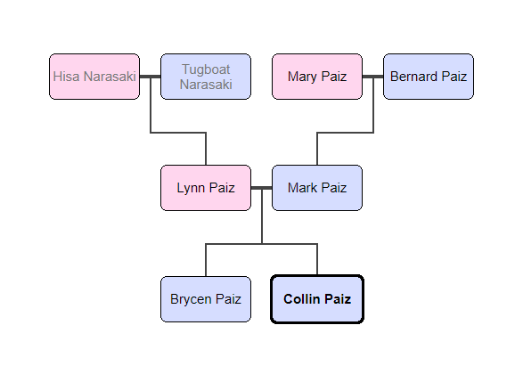

About My Family Members
I have two parents and one older brother who is currently away at Chapman University. My family members' names and ages are listed in the table below. My Father, Mark E. Paiz, was born on February 2, 1964 (55). My mother, Lynn A. Paiz, was born on February 21, 1964 (53). My brother, Brycen N. Paiz, was born on February 8, 1999 (18). My mother is full Japanese and my dad is half Spanish and half German (approximately). My mom was born in Pasadena, California which is where she grew up. She attended UC Santa Barbara where she got her degree is mechanical engineering. She grew up with two parents and one brother, Scott Narasaki (55). He had two kids, Mitchell (19) and Kylie (15), my two cousins. My Grandma, Hisa, was also born here in the US as well as my Grandpa, "Tugboat". My dad was born in Denver, Colorado and attended CU Denver where he also got his mechanical engineering degree. He has one older sister, Lynn (57) and two younger brothers, Chris (52) and Jeff (46). Lynn had no children; Chris had Bryan (26) and Brittney (24); and Jeff had Braedan (15), Reese (13) and Molly (10). My Grandpa Bernard is spanish and my Grandma Mary is German. My brother graduated from Torrey Pines High School and is now in his first year of college at Chapman University in Orange, California. My parents both work at their company, Sherpa Clinical Packaging where they box, store and ship pharmaceutical drugs for dozens of companies.

Lineage
My parents and grandparents were all born in the United States. My mother's parents are both Japanese. My father's mother is German and my father's father is Spanish. That makes my brother and I half Japanese, a quarter Spanish and a quarter German (approximately). I have no knowledge of any important family memebers to where they would have a webpage for them. The only thing I know that is somewhat relevant is that my grandfather (dad's side) built some important bridges in Colorado, which is where he lived most of his life.
Immediate Family Chart
| Name | Age | Date of Birth |
|---|---|---|
| Mark Paiz | 55 | February 2, 1962 |
| Lynn Paiz | 53 | February 21, 1964 |
| Brycen Paiz | 18 | February 28, 1999 |